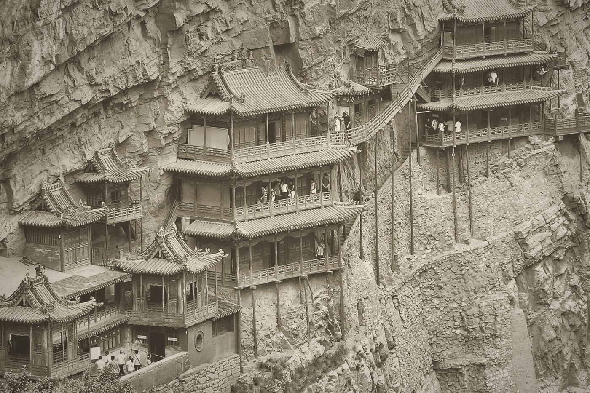

陕北说书
游戏里无头僧弹三弦唱「黄风岭」，用的是陕北说书。它原是盲艺人走村串户的说唱，2006 年列入第一批国家级非遗。
一只猴子背后，是一百回小说、二十七处古建、一门快要没人听的说书，和一次不太一样的文化出海。这一页写得像纸，读起来可以慢一点。
Field Notes · 考据笔记
《黑神话：悟空》最聪明的地方，不是把画面做得多真，而是它知道这个故事该从哪里接下去。
《西游记》本来就是一个「在路上」的故事。明代人把它写成一百回，写的是取经，也是修心；孙悟空从石头里蹦出来，先学本事，再闹天宫，最后被压五行山——这条线，是一条把「心猿」按下去、又放出来的线。
《黑神话：悟空》接在这条线的后面：取经完成，斗战胜佛已成，故事却从「他死了」开始。这个续写并不违背原著的精神，反而把原著里最容易被忽略的那一层——「成佛之后呢」——翻了出来。
游戏没有把悟空供在神坛上，而是让一只小猴子去捡他的六根。六根是佛家的说法，也是人的六种感官；找六根，其实是重新学会看、听、闻、尝、触、想。
所以它讲的不只是打怪。黑熊精的贪、黄眉的痴、红孩儿的嗔、盘丝岭的爱别离，都是「八苦」里的人间事。打完一只妖，往往是看完一个人。
踏平坎坷成大道，《敢问路在何方》· 阎肃 词
斗罢艰险又出发。

游戏科学在山西、浙江、四川等地实地扫描古建与造像，其中山西就有二十七处。它们不是背景板：斗拱、鸱吻、经幢、悬塑，决定了这座山看起来像不像「中国」。
最有名的是隰县小西天。满堂悬塑贴金，层层叠叠，被化用为第三回的「小西天」；大同悬空寺、五台山佛光寺、平遥双林寺、晋城玉皇庙的二十八宿，也都在游戏里留下了影子。
游戏里无头僧弹三弦唱「黄风岭」，用的是陕北说书。它原是盲艺人走村串户的说唱，2006 年列入第一批国家级非遗。
「心猿」是《西游记》的老题目：孙悟空是心，白龙马是意，八戒是欲。游戏让天命人重走一遍，是把这颗心再修一次。
2024 年 8 月发售后，游戏进入多国销量榜；TGA 2024 拿下最佳动作游戏与玩家之声。它让世界先看见山，再问山后面的故事。
Timeline · 一条时间线
说明：本页为课程作业中的资料整理，数据与时间线取自公开发布信息；古建信息以文物部门公开介绍为准，若有出入，以官方资料为是。